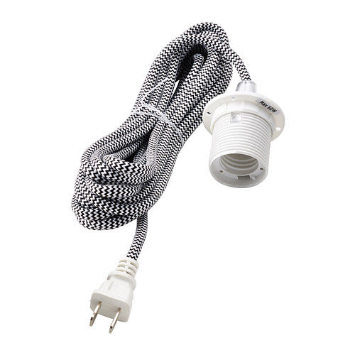
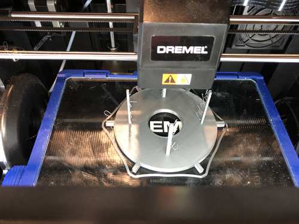
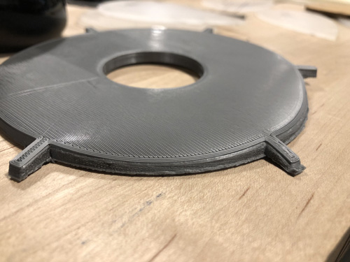
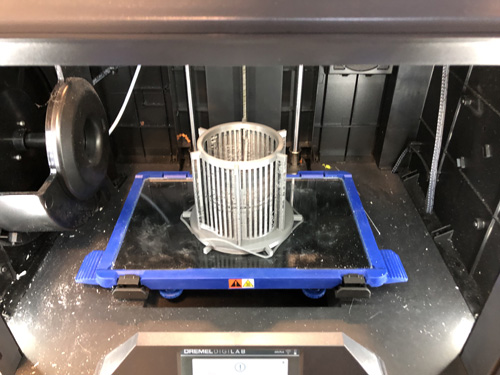
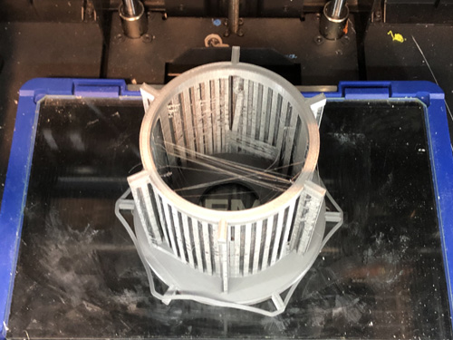
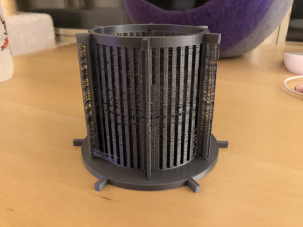
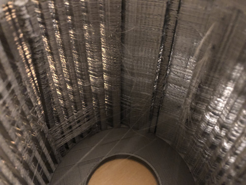
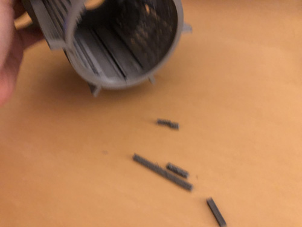

For this assignment, I dug out an old Ikea "Sekond" light bulb socket:

After measuring the socket, and the test lightbulb, I started designing a structure that would be mounted on the socket. and experimented with discs in Rhino to mount the laser-cut pieces on it.

At some point, I decided to create two discs to place groups of tiles on two levels, and used pillars to connect both discs.

The settings for the 3D printer were: Base= 60C, Extruder Temp= 230C.
The intial print was sent without supports, so eventually realized that it would fail.

The result was quite underwhelming, but at least had some functional parts.

For the next print iteration, I added supports in the Dremel app so that it would properly print the second level.

The final version had good potential.

The supports seemed to have done a good job.

The inside looked funky, especially because two support pillars were definitely not straight, which would be problematic.

As I carefully removed the supports, the actual column for the second cirle snapped off -- it was easier to break the columns themselves than some sections of the supports :(.


Since the initial printing failed halfway through, I used the original disc to test with acrylic cutouts while a second version was being printed.
The power settings for the laser cutter to cut out the acrylic were: Speed= 8%, Power= 100%, Phase= 100%

The socket fit perfectly.

I felt that the original acrylic pieces were smaller than they should, so I decided to do something simpler that would work better with a single level of acrylic cut-outs:

Then cut the shapes in translucent acrylic, and a second set in slightly smaller sizes and transparent acrylic.

The pieces came out quite nicely!

I mounted the acrylic pieces to the 3D printed disc-mount.

Even if the structure was a bit wobbly, it felt like it added some life to the lamp.

First test with the first 3D printed disc (note that only 5 out of the 6 notches worked).

The second version, although a failure in the broader picture, had a very nice base disc.

I really liked the optical effect of using two acrylic pieces of varying sizes in the final version -- it came out quite nice!

Source files for the lamp:
- The 3D structure to connect to the socket and hold the acrylic pieces
- The petal shapes that were cut first
- The petal shapes that were cut later